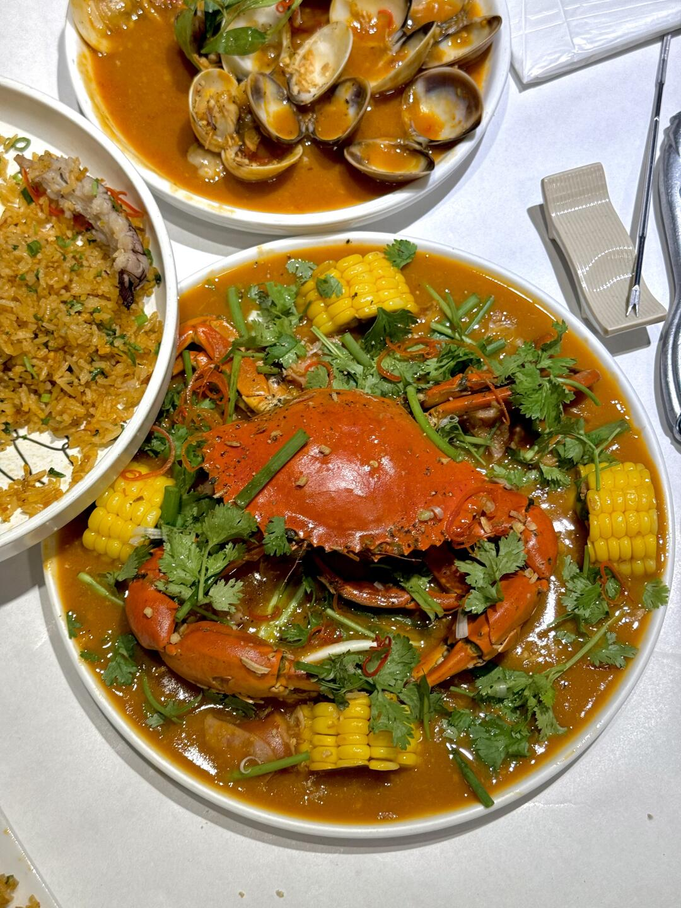
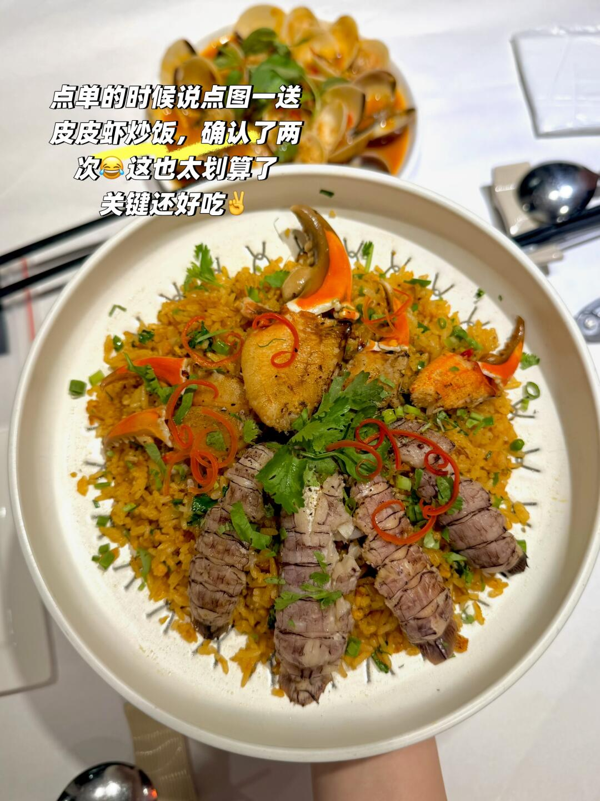
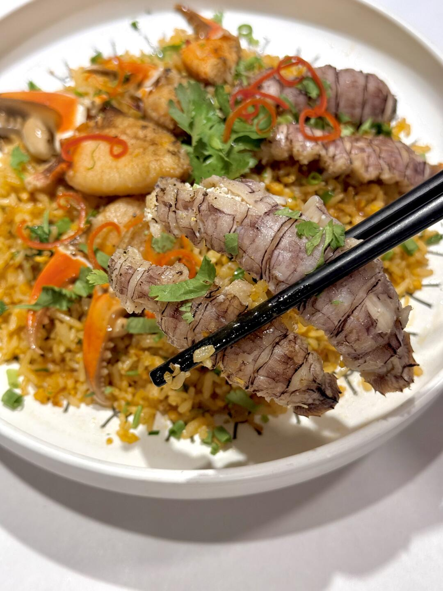
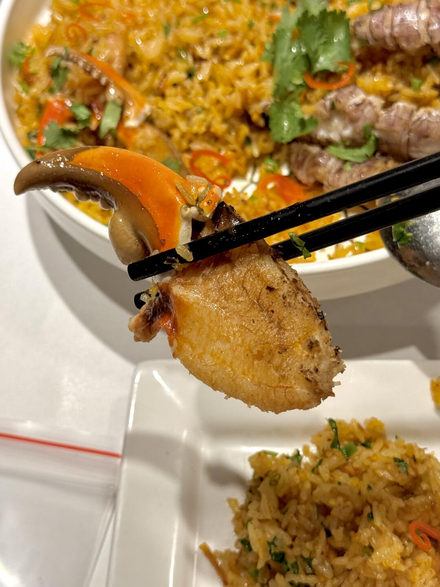
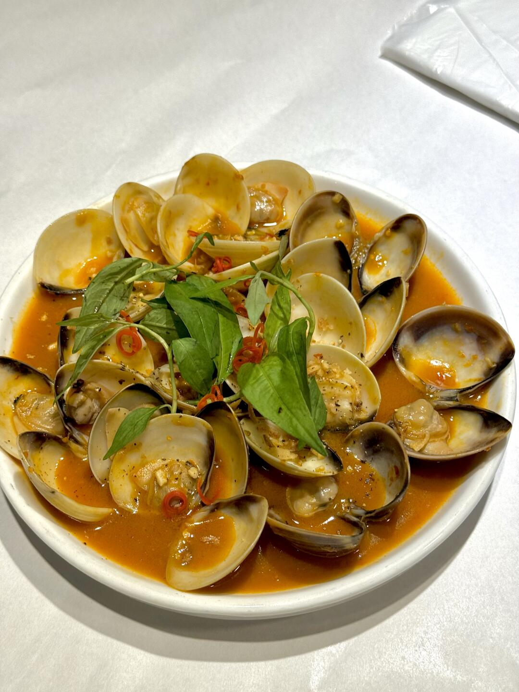
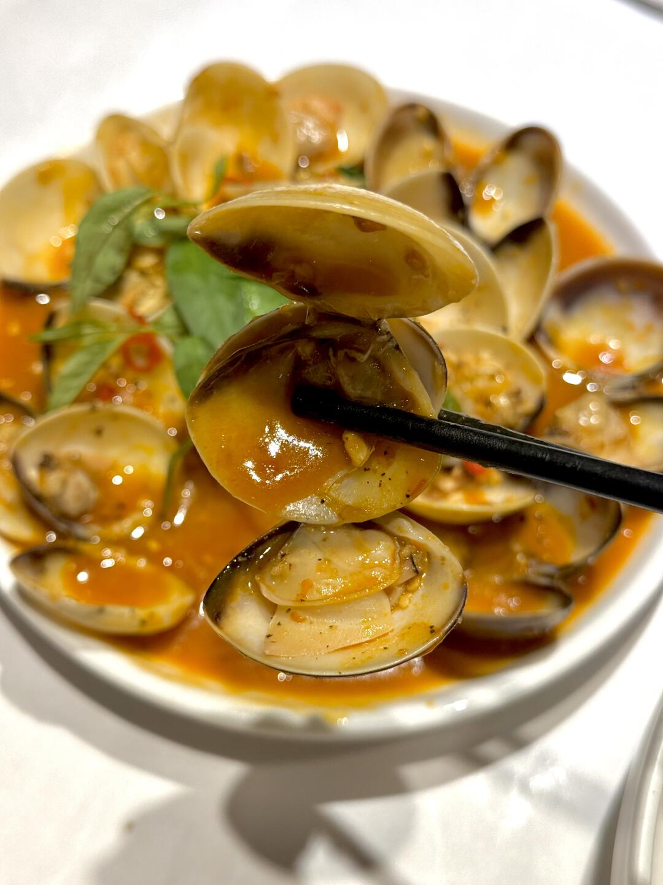
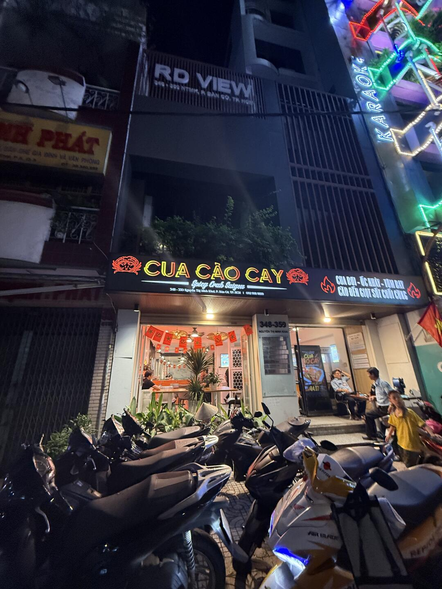
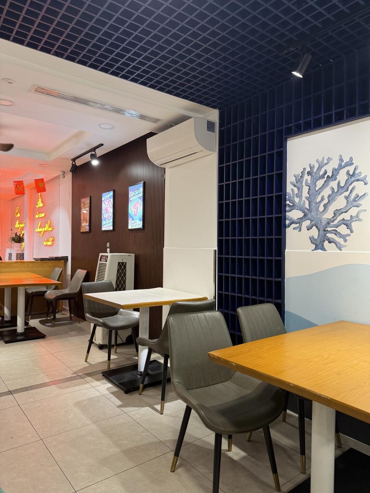
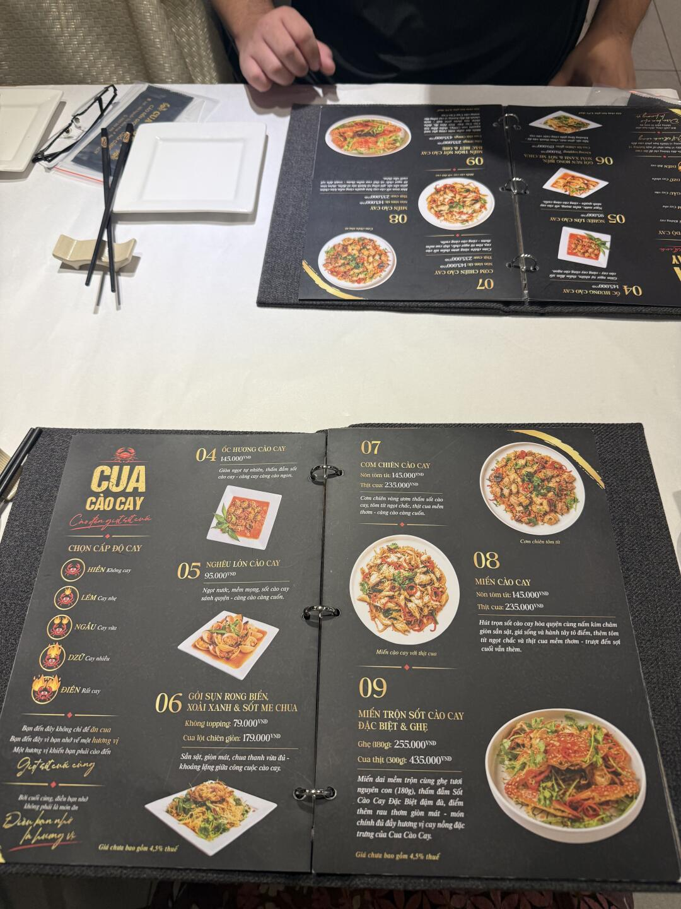
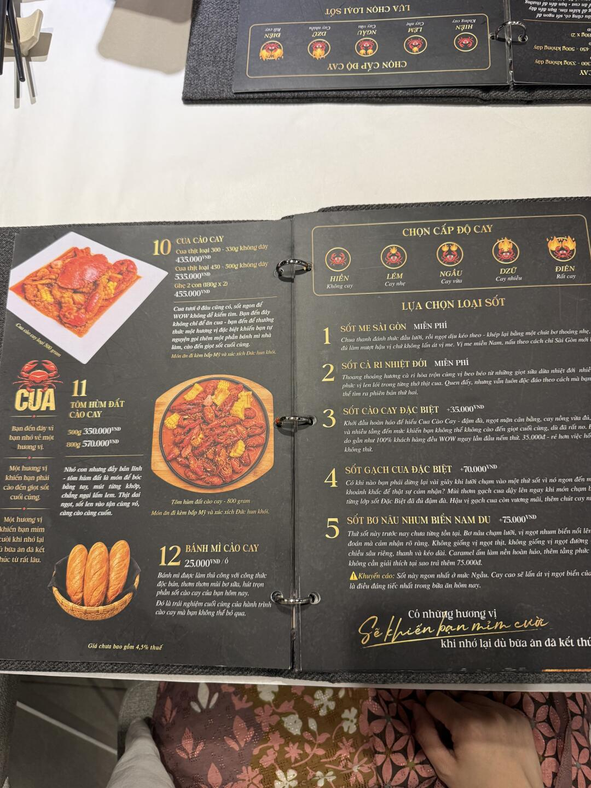

美食筆記 · 來自 Obsidian · 2026-10-19 擷取
香辣蟹｜CUA CÀO CAY（點蟹送炒飯）

類型香辣蟹、辣炒花蛤、皮皮蝦炒飯營業每日 10:30–22:30（週三至 23:30）評分⭐ 4.9（359）電話0929 989 899價格人均約 70 元人民幣（兩人點 5 和 10 號，送了 9 號＝共 3 道菜）
食物：香辣蟹、辣炒花蛤、皮皮蝦炒飯
價格：人均約 70 元人民幣（兩人點 5 和 10 號，送了 9 號＝共 3 道菜）
評價：辣度選中等，招牌香辣蟹香辣入味、海鮮完全沒腥味；點蟹還送皮皮蝦炒飯，性價比絕了！辣炒花蛤的醬汁拌炒飯超讚。不用排隊（比網紅蟹店好）
⚠️ 注意：炒飯有點硬，想吃軟一點的點單時要先說
📍 CUA CÀO CAY - SPICY CRABS SAIGON — 348-350 Nguyễn Thị Minh Khai, Bàn Cờ（第一郡附近）
🕐 每日 10:30–22:30（週三至 23:30）| ⭐ 4.9（359 評）| ☎ 0929 989 899
📸 實拍（共 10 張）









📌 資料來源：內容與全部 10 張照片來自小紅書實地帖文（Pebble 擷取至 Obsidian，2026-10-19）。
營業時間、價格與電話可能變動，出發前建議以現場或官方最新資訊為準。